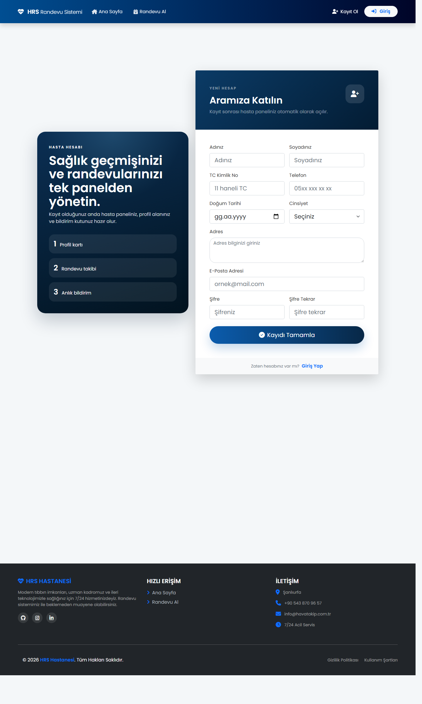
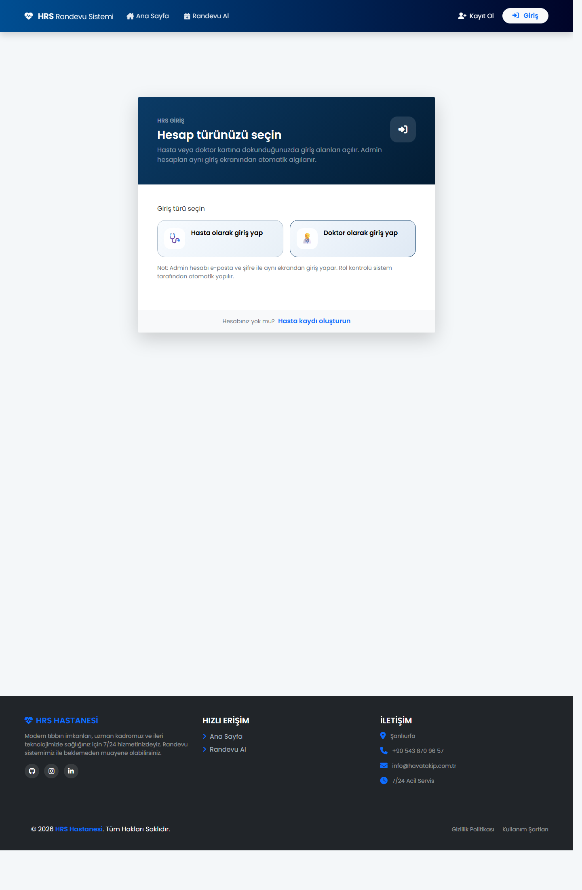
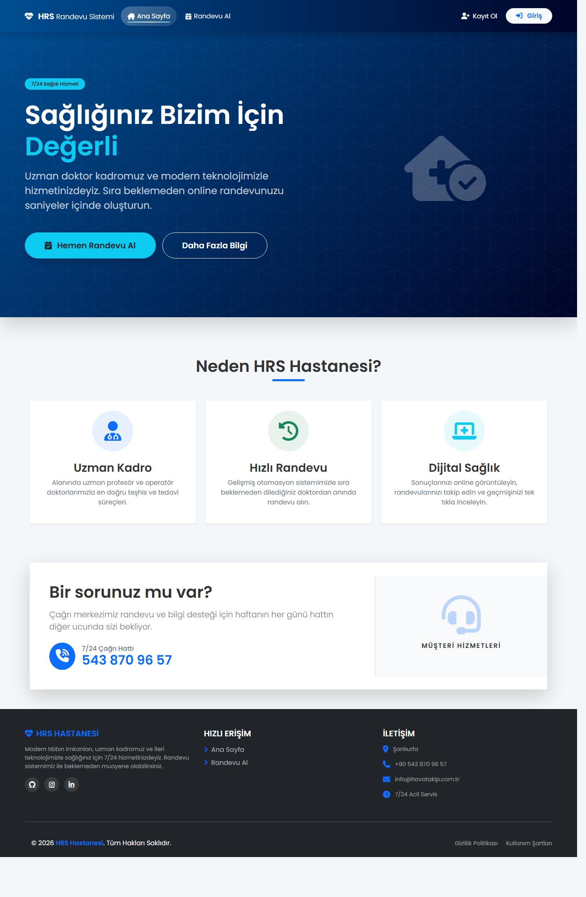

Bu rapor, projenin ilk beş haftasında yapılan geliştirmeleri haftalara göre toplu şekilde göstermek
amacıyla hazırlanmıştır. Her hafta kısa olarak açıklanmış ve uygun noktalarda projeden alınan ekran
görüntüleri ile desteklenmiştir.
Proje
Hastane Randevu Sistemi
Kapsam
Hafta 1 - Hafta 5
Tarih
29 Mart 2026
Genel Değerlendirme
İlk beş haftalık süreçte proje, temel bir kayıt ve giriş uygulamasından çıkarak hasta, doktor ve yönetim
tarafları olan daha düzenli bir hastane randevu sistemine doğru ilerlemiştir. Kullanıcı bilgileri,
panel yapısı, raporlama mantığı ve randevu akışları adım adım güçlendirilmiştir.
Haftalara Göre Yapılan Çalışmalar
Hafta 1
İlk haftada sistemin kullanıcı altyapısı oluşturuldu. Kayıt ekranı genişletilerek ad, soyad, T.C.,
telefon, doğum tarihi, cinsiyet ve adres gibi alanlar sisteme eklendi. Böylece uygulama, sadece basit
bir üye kaydı mantığından çıkarak hasta bilgilerini tutabilen daha anlamlı bir yapıya kavuştu.

Hafta 1 ile ilgili görsel: Kayıt ekranı. İlk hafta eklenen kullanıcı bilgileri ve hasta kaydı mantığı
bu ekranda doğrudan görülmektedir.
Hafta 2
İkinci haftada hasta paneli tarafında ilerleme sağlandı. Dashboard, profil ve bildirim alanları ile
kullanıcı, sisteme girdikten sonra kendi bilgilerini ve hareketlerini görebileceği bir yapıyla
karşılaşmaya başladı. Randevuların hasta ile ilişkilendirilmesi de bu sürecin önemli parçalarından biri oldu.
Hafta 3
Üçüncü haftada rol bazlı düzen daha belirgin hale getirildi. Hasta, doktor ve admin tarafları için
erişim mantığı daha kontrollü hale getirilirken, giriş akışında da farklı kullanıcı tiplerine uygun
bir düzen oluşturuldu. Bu hafta kullanıcı deneyimi ve güvenlik mantığı birlikte geliştirildi.

Hafta 3 ile ilgili görsel: Giriş ekranı. Rol seçimine uygun yapısı ve kullanıcı tipine göre ilerleyen
oturum akışı, üçüncü haftadaki geliştirmeleri desteklemektedir.
Hafta 4
Dördüncü haftada yönetim tarafı daha detaylı hale getirildi. Admin paneline raporlama, filtreleme,
durum takibi ve yönetsel özet ekranları eklendi. Bu hafta ile birlikte proje, sadece kayıt ve randevu
oluşturan bir sistem olmaktan çıkarak takip ve kontrol yapılabilen bir yapıya doğru ilerledi.
Hafta 5
Beşinci haftada randevu akışlarının kullanılabilirliği artırıldı. Arama, filtreleme, sıralama ve özet
kartlar sayesinde ekranlar daha rahat takip edilebilir hale getirildi. Bekleyen, tamamlanan ve iptal edilen
randevuların daha net ayrılması da sistemin genel düzenini güçlendirdi.

Hafta 5 sonrası genel görünüm: Ana sayfa. İlk beş haftanın sonunda projenin kullanıcıya yansıyan genel
arayüz kalitesi ve sistemin temel sunum yapısı bu ekranla desteklenmektedir.
Sonuç
İlk beş haftanın sonunda proje daha düzenli, daha kullanışlı ve sonraki haftalarda geliştirilmeye uygun
bir temel üzerine oturtulmuştur. Kullanıcı kaydı, rol bazlı giriş yapısı, hasta paneli ve yönetsel akışlar
birlikte değerlendirildiğinde, projenin omurgasının bu süreçte oluştuğu görülmektedir.